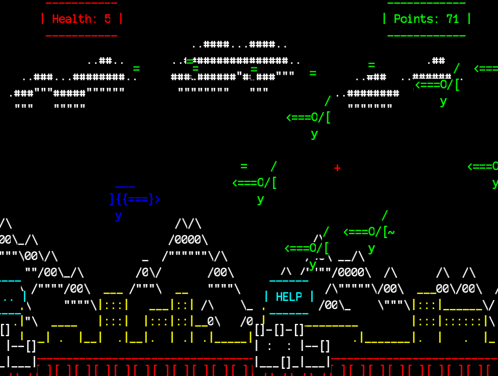
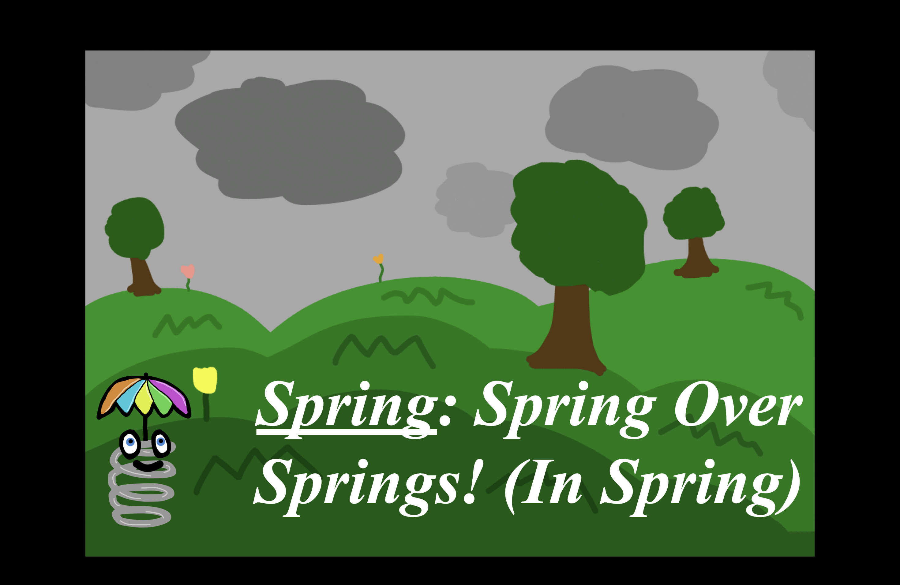
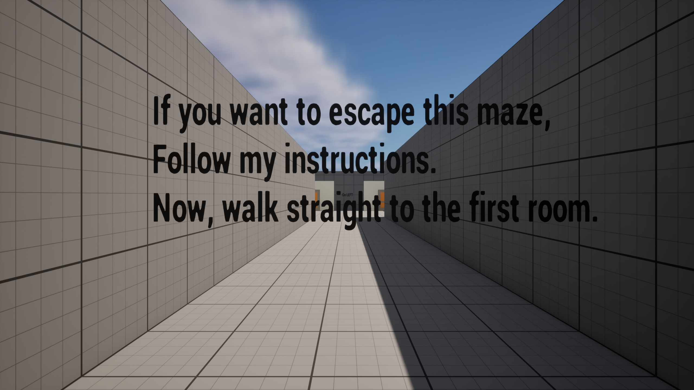

Games Developed
Cull The Weak
Infinite Horizontal-Scrolling Arcade Shooter

- The game was developed in the Game Engine course with my partner, Dennis.
- It was a one-week project built using a text-based engine and C++.
- In Cull the Weak, the player shoots down enemy fighters while dodging their bullets.
- Player can also bomb ground targets for extra points.
- The game continues indefinitely; the goal is to score the highest points possible before death.
Spring: Spring Over Springs! (In Spring)
Cartoonish 2D Platformer

- Spring was a one-week IGDA game jam game developed with my friends, Ethan and Hung.
- The theme was to base a game around a polysemous word, so "spring" is a perfect candidate.
- We used Unity for the project, and I was responsible for player movement and level design.
- The game is a 2D platformer. The player plays as a spring and tries to escape from the hot springs.
- Win by reaching the end of the level.
Don't Get lost
Walking Simulator

- Don't Get Lost was an IGDA game jam game developed by me over three days.
- The theme was to use unfamiliar tools, so it was my first time using Unreal.
- Inspired by Stanley's Parable, I created a simple, narrative-driven walking game.
- It is the player's choice to collaborate or fight with the imaginary narrator.